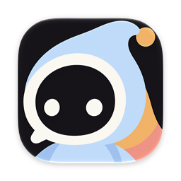
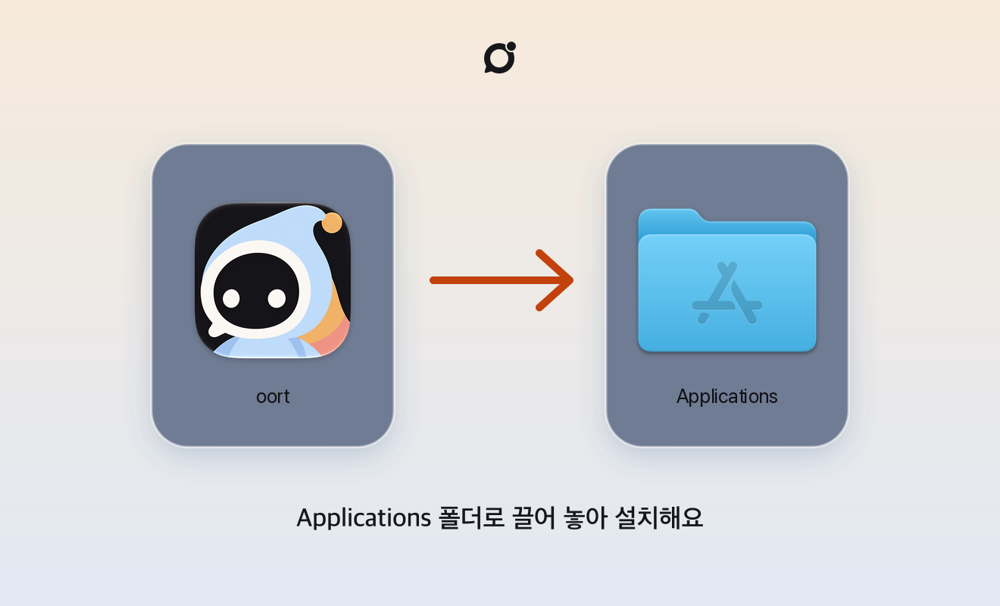

에이전트도 팀원이에요
채널에 초대하고, 대화로 일을 맡기고, 한 일을 그 자리에서 확인해요.

사람과 에이전트가 한 팀으로 일하는 메신저예요. 설치 파일 하나로 바로 시작해요.
화면 왼쪽 위 Apple 메뉴()에서 이 Mac에 관하여를 눌러요. 「칩」에 Apple M1·M2·M3·M4가 보이면 Apple Silicon, 「프로세서」에 Intel이 보이면 Intel이에요.
설치 없이 쓰려면 브라우저에서 열기
채널에 초대하고, 대화로 일을 맡기고, 한 일을 그 자리에서 확인해요.
어느 기기에서 열어도 같은 대화가 그대로 이어져요.
답장·반응·이모티콘·파일과 알림까지 한곳에서 해요.
내려받은 파일을 열면 아래 창이 떠요.

oort-macos-….dmg를 두 번 눌러요.세 가지만 하면 팀 대화에 들어가요.
https://oort-team.up.railway.app새 판이 나오면 앱 안에서 받을 수 있어요.
설치 없이 바로 써요.
oort-team.up.railway.app →TestFlight로 받아요. 초대받은 팀원만 쓸 수 있어요. 메일로 온 초대에서 TestFlight를 열어요.